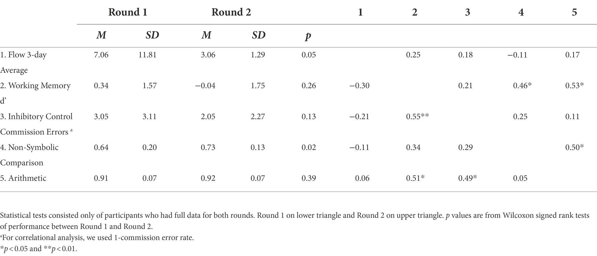
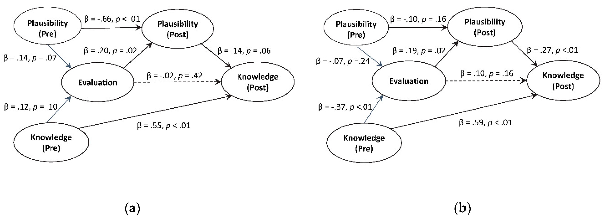

Research
Peer-Reviewed Publications
Rethinking Executive Functions in Mathematical Cognition (Medrano and Prather 2023)
New perspectives on executive functions propose a greater involvement of context. These perspectives have implications for research in mathematical cognition. We tackle the problem that although individuals clearly exercise inhibitory control in mathematical contexts, researchers find that the relations between inhibitory control and mathematics are sometimes “weaker than expected.” In this review, we identify how children and adults use inhibitory control in specific foundational symbolic and non-symbolic mathematical contexts, with attention to concepts learned in primary (6 to 12) years. Then, we argue that considering context (e.g., task features, participant’s state, and prior knowledge) will allow researchers to thoroughly investigate the mechanistic role of cognitive processes involved in mathematical tasks.
Bridging the Environment and Neurodevelopment for Children’s Health: Associations Between Real-Time Air Pollutant Exposures and Cognitive Outcomes (Medrano et al. 2022)
Research suggests that children’s exposure to pollutants may impact their neurocognitive development. While researchers have found associations between air pollutants and cognitive development, these associations remain underspecified. Further, these exposures occur in the context of the built environment and may be exacerbated by local social vulnerability; in this context, individuals may experience a suite of socioenvironmental stressors that lead to increased cumulative risk exposure. In this pilot study, we tested whether real-time-measured personal exposure to PM2.5 relates to children’s executive function and mathematical skills, outcomes that may predict later mathematical performance, general academic performance and even employment outcomes. We recruited 30 families to participate in two rounds in Winter 2020 and Summer 2021. We collected children’s demographic data, as well as data about their living environment. In each round, children carried a small device that collected real-time ambient air pollution data for 3 days; parents logged their children’s activities each day. On the last day, children completed cognitive assessments indexing their working memory (n-back), inhibitory control (Go/No-Go), nonsymbolic math skills (dot comparison), and arithmetic skills (equation verification). Overall, 29 participants had pollutant readings from both rounds, and 21 had a full dataset. Nonparametric statistical analysis revealed no significant differences in ambient air pollution and cognitive performance over time, Spearman’s rho correlation assessment found that PM2.5 was not significantly correlated with cognitive outcomes in R1 and R2. However, the correlations suggested that an increase in PM2.5 was associated with worse working memory, inhibitory control, nonsymbolic skills, and arithmetic skills, at least in R1. We used each participant’s zip code-aggregated Social Vulnerability Index, which range from 0 to 1, with higher numbers indicating more social vulnerability. Wilcoxon Rank-Sum tests indicated that participants living in higher SVI zip codes (≥0.70; n = 15) were not significantly different from those living in lower SVI zip codes (<0.70; n = 14), in terms of their PM2.5 exposures and cognitive performance in each round. We also found that socioeconomic characteristics mattered, such that children whose parent (s) had at least a Master’s degree or earned more than $100,000 a year had lower PM2.5 exposures than children in the other end.

What Can Cognitive Science Do for People? (Prather et al. 2022)
The critical question for cognitive scientists is what does cognitive science do, if anything, for people? Cognitive science is primarily concerned with human cognition but has fallen short in continuously and critically assessing the who in human cognition. This complacency in a world where white supremacist and patriarchal structures leave cognitive science in the unfortunate position of potentially supporting those structures. We take it that many cognitive scientists operate on the assumption that the study of human cognition is both interesting and important. We want to invoke that importance to note that cognitive scientists must continue to work to show how the field is useful to all of humanity and reflects a humanity that is not white by default. We wonder how much the field has done, and can do, to show that it is useful not only in the sense that we might make connections with researchers in other fields, win grants and write papers, even of the highest quality, but useful in some material way to the billions of non-cognitive scientists across the globe.
Students’ Scientific Evaluations of Water Resources (Medrano et al. 2020)
Socially-relevant and controversial topics, such as water issues, are subject to differences in the explanations that scientists and the public (herein, students) find plausible. Students need to be more evaluative of the validity of explanations (e.g., explanatory models) based on evidence when addressing such topics. We compared two activities where students weighed connections between lines of evidence and explanations. In one activity, students were given four evidence statements and two models (one scientific and one non-scientific alternative); in the other, students chose four out of eight evidence statements and three models (two scientific and one non-scientific). Repeated measures analysis of variance (ANOVA) showed that both activities engaged students’ evaluations and differentially shifted students’ plausibility judgments and knowledge. A structural equation model suggested that students’ evaluation may influence post-instructional plausibility and knowledge; when students chose their lines of evidence and explanatory models, their evaluations were deeper, with stronger shifts toward a scientific stance and greater levels of post-instructional knowledge. The activities may help to develop students’ critical evaluation skills, a scientific practice that is key to understanding both scientific content and science as a process. Although effect sizes were modest, the results provided critical information for the final development and testing stage of these water resource instructional activities.
